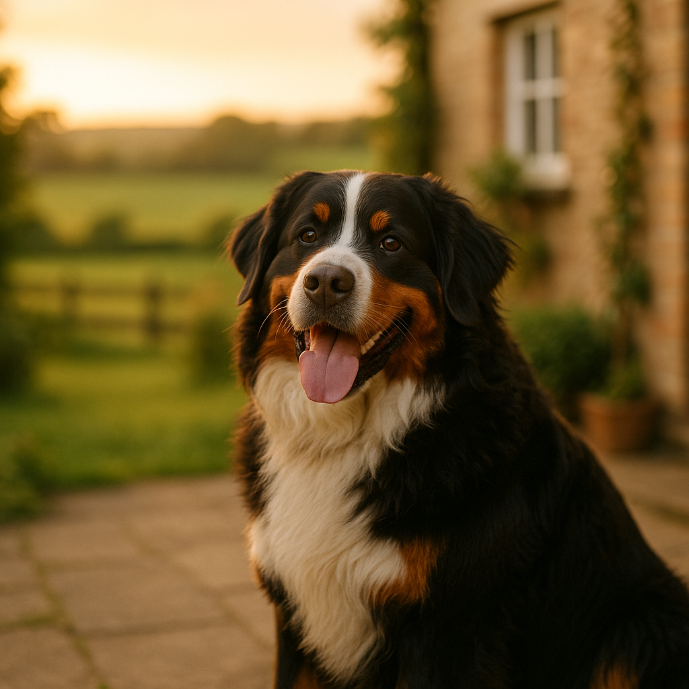

Best Food for Sphynx Cats UK 2026: Nutrition Guide for a High-Energy Breed
Contents
- Why Do Sphynx Cats Have Unique Nutritional Needs?
- How Much Should You Feed a Sphynx Cat?
- What Are the Best Wet Foods for Sphynx Cats in the UK?
- What Are the Best Dry Foods for Sphynx Cats in the UK?
- Which Ingredients Should You Look For (and Avoid) in Sphynx Cat Food?
- How Does Feeding Change for Sphynx Kittens, Adults, and Seniors?
- Which Common Sphynx Health Issues Are Affected by Diet?
- Our Top Picks at a Glance
- Frequently Asked Questions
This article contains affiliate links. We may earn a small commission if you make a purchase, at no extra cost to you.
The best food for Sphynx cats in the UK is a high-protein, moderate-fat diet with plenty of moisture, ideally from quality wet food or a combination of wet and dry. Sphynx cats (the hairless breed developed from a natural mutation first documented in Canada in the 1960s) have a significantly faster metabolism than most other domestic cats because they have no fur coat to retain body heat. According to a study cited by the Feline Advisory Bureau, hairless cats can require up to 20% more calories per kilogram of body weight than a coated cat of the same size. That means feeding a Sphynx the same food and quantity you would give a standard moggy is likely to leave them underfed, underweight, and prone to a host of secondary health problems.
In this guide, Loyal & Loved has pulled together everything you need to know about feeding a Sphynx properly in 2026: how much to feed, which UK products are genuinely worth the money, what to look for on the label, and which ingredients to avoid. We have also included a breakdown by life stage, because a Sphynx kitten and a ten-year-old Sphynx senior have very different requirements.
Why Do Sphynx Cats Have Unique Nutritional Needs?
Sphynx cats have unique nutritional needs because their lack of a fur coat means their bodies must generate significantly more metabolic heat to maintain a safe core body temperature. Where most cats lose heat gradually through their fur, a Sphynx loses it rapidly through bare skin, which means their metabolism runs hotter and faster almost constantly. The result is a cat that burns calories at a noticeably higher rate, even while resting.
This has a direct knock-on effect on the nutrients they need. Protein is the primary fuel source for metabolic heat generation in cats (who are obligate carnivores, meaning they must eat meat to survive and cannot synthesise essential amino acids from plant sources). A Sphynx therefore needs a diet with a higher crude protein content than many standard cat foods provide. The European Pet Food Industry Federation (FEDIAF) recommends a minimum of 25g of protein per 100g of dry matter for adult cats, but many vets advise aiming higher for Sphynx, ideally 35% or above on a dry matter basis.
Fat is also important. Dietary fat provides concentrated energy and supports skin health, which matters especially for a Sphynx because without fur, their skin is exposed and prone to oiliness, sebaceous build-up, and sensitivity. Omega-3 and omega-6 fatty acids, found in fish oils and quality animal fats, help to keep that bare skin in reasonable condition.
As Loyal & Loved explains, the Sphynx is also a breed with a documented predisposition to hypertrophic cardiomyopathy (HCM), a form of heart disease. Taurine, an amino acid found naturally in animal-based proteins, is essential for cardiac function in cats. A diet rich in quality animal protein will generally supply adequate taurine, but it is worth checking that any food you buy lists taurine either in the ingredients or as a supplement.
How Much Should You Feed a Sphynx Cat?
Most adult Sphynx cats should be fed approximately 250 to 300 calories per day, though this varies considerably by individual size, activity level, and whether the cat is neutered. This is meaningfully higher than the roughly 200 calories that is often quoted for a sedentary, coated domestic cat of similar body weight.
A typical adult Sphynx weighs between 3.5 and 5kg. As a rough working guide:
- A 3.5kg active Sphynx: approximately 240 to 270 kcal per day
- A 4.5kg adult Sphynx: approximately 280 to 320 kcal per day
- A 5kg neutered Sphynx with a lower activity level: approximately 250 to 280 kcal per day
Always check the calorie content (sometimes listed as metabolisable energy, or ME) on the specific food you are using. UK pet food manufacturers are not legally required to print kcal on the label, but most premium brands include it on their website or on request. Loyal & Loved found that many standard feeding guides printed on pouches and tins underestimate the needs of a Sphynx by a noticeable margin, so it is worth using those as a starting point rather than a fixed rule.
We recommend splitting the daily amount across two to three meals to support stable blood sugar levels and reduce the risk of the gorging and digestive discomfort that Sphynx cats can be prone to. Free-feeding dry food throughout the day is an option some owners use, but it can make it harder to monitor intake.
| Life Stage | Approximate Daily Calories | Meals Per Day |
|---|---|---|
| Kitten (under 12 months) | 300 to 400 kcal | 3 to 4 |
| Adult (1 to 7 years) | 250 to 320 kcal | 2 to 3 |
| Senior (7 years+) | 220 to 280 kcal | 2 to 3 |
What Are the Best Wet Foods for Sphynx Cats in the UK?
Wet food is the best primary diet for most Sphynx cats because its high moisture content supports kidney function, helps prevent urinary tract issues, and mirrors what a cat would eat in the wild. Most tinned and pouched cat foods contain between 75% and 82% moisture, which counts meaningfully toward your cat's daily hydration. Sphynx cats are not notably better than other cats at drinking enough water voluntarily, so building hydration into food is a practical safeguard.
Below are the wet food options Loyal & Loved recommends for Sphynx cats available in the UK in 2026, along with honest notes on each.
1. KatKin Fresh Cat Food
KatKin produces 100% human-grade fresh cat food, delivered frozen in portioned pouches and made in the UK. The range is genuinely high in named animal protein: options include chicken, turkey, salmon, beef, and duck, with protein levels typically sitting above 50% on a dry matter basis. The food contains no artificial preservatives, no feed-grade fillers, and no rendered meals. KatKin also calculates your individual cat's daily portion based on weight and life stage, which is particularly useful for Sphynx owners who need to feed above average quantities.
Pros: Very high protein; no fillers; human-grade ingredients; portioned to your cat's needs; taurine supplemented.
Cons: Premium price point; requires freezer space; subscription model.
Approximate cost: From around £45 to £65 per month depending on cat size and plan. A free trial box is available. Try KatKin for your Sphynx.
2. Barking Heads Paw Lickin' Chicken for Cats
Barking Heads (and its cat-focused sister brand Meowing Heads) offers a range of grain-free wet foods with named meat as the primary ingredient. The Paw Lickin' Chicken variety contains 70% chicken and chicken broth, with a relatively clean ingredient list. It is widely available in UK pet shops and online, and sits at a mid-range price point.
Pros: Good protein content; grain-free; widely available; palatable for most cats.
Cons: Protein content lower than premium raw or fresh options; some varieties contain pea protein (a plant-based protein filler).
Approximate cost: Around £1.50 to £2 per 100g pouch; multipack boxes typically £20 to £30 for 12 pouches. Browse Meowing Heads on their site.
3. AATU Cat Wet Food
AATU produces 80% meat and fish wet foods with no artificial additives and a strong nutritional profile. Their single-protein recipes (such as 80% salmon or 80% chicken) are useful for Sphynx cats with suspected food sensitivities, as the simplified ingredient list makes it easier to identify triggers. AATU products are made to FEDIAF standards and are available through major UK pet retailers.
Pros: 80% named meat; single-protein options; no artificial colours or preservatives; good palatability.
Cons: Slightly higher in ash content than some alternatives; not suitable as a sole diet without variety rotation.
Approximate cost: Around £1.20 to £1.60 per 85g tin; cases of 24 typically £25 to £35. Explore AATU cat food.
4. Bella & Duke Raw Cat Food
Bella & Duke offers a complete raw (BARF-style) diet for cats, delivered frozen. Raw feeding is not for every owner, but for those willing to manage the logistics, it can deliver an excellent nutrient profile for a Sphynx. Bella & Duke's cat range includes muscle meat, organ meat, and ground bone, which provides natural taurine, calcium, and phosphorus in appropriate ratios. The company is a member of the Pet Food Manufacturers' Association (PFMA) and follows UK raw pet food guidelines.
Pros: Extremely high protein and moisture; no synthetic fillers; natural taurine from organ meat; biologically appropriate.
Cons: Requires careful handling and freezer space; not suitable for immunocompromised households; higher price point.
Approximate cost: From approximately £40 to £60 per month depending on portion size. See Bella & Duke cat food.
What Are the Best Dry Foods for Sphynx Cats in the UK?
Dry food can form a useful part of a Sphynx cat's diet, particularly for owners managing costs, but it should not be the sole food source for this breed. Dry food (kibble) typically contains only 8 to 10% moisture, which is far too low to meet a cat's hydration needs on its own. If you use dry food, it is best combined with wet food or a fresh diet, and a water fountain is strongly recommended to encourage additional drinking.
That said, a good quality dry food offers convenience and dental benefits, and some Sphynx cats take readily to it. Here are the options we consider worth recommending in the UK.
1. Your Pet Nutrition High Protein Cat Food
Your Pet Nutrition produces a range of high-protein dry cat foods with named meat as the first ingredient and a protein content above 40% on a dry matter basis. They offer grain-free options suitable for Sphynx cats, and the range is formulated to meet FEDIAF complete nutrition standards. The brand has grown significantly in the UK market since 2024 and is now available online with subscription discounts.
Pros: High protein; grain-free options; good value on subscription; FEDIAF complete.
Cons: Dry food only, so must be supplemented with wet; limited flavour variety compared to larger brands.
Approximate cost: Around £18 to £25 per kg. Browse Your Pet Nutrition.
2. AATU Dry Cat Food (80/20 Grain-Free)
AATU's dry range uses the same 80% meat philosophy as their wet foods, which is unusually high for a kibble. The grain-free formula replaces cereals with botanicals and vegetables, keeping carbohydrate content relatively low. This is important for Sphynx cats: while cats can process some carbohydrate, they are not designed for the high-carb loads found in many budget dry foods, and excess carbohydrate can contribute to weight gain and digestive upset.
Pros: 80% meat content; grain-free; low carbohydrate; good range of protein sources.
Cons: Still dry food, so moisture supplementation is important; can be expensive per bag.
Approximate cost: Around £8 to £14 per 450g bag. View AATU dry cat food.
Which Ingredients Should You Look For (and Avoid) in Sphynx Cat Food?
Reading a pet food label is a skill worth developing, especially for Sphynx owners. UK pet food labelling is regulated by the Veterinary Medicines Directorate and governed by EU-derived regulations retained in UK law post-Brexit, including the Feed Hygiene Regulation and the Pet Food Manufacturers' Association's industry code. Here is what to look for and what to steer clear of.
Ingredients to prioritise
- Named animal proteins first: Chicken, turkey, salmon, beef, or duck should appear first on the ingredient list. "Meat and animal derivatives" is a legal but vague catch-all that can include poor-quality by-products.
- Taurine: Either present naturally via organ meat or listed as a supplement. Essential for heart and eye health.
- Omega-3 fatty acids: From fish oil, salmon oil, or flaxseed. Supports skin health, which matters especially for a bare-skinned Sphynx.
- Moisture-rich formats: Particularly important; look for water or broth listed early in wet food.
- L-carnitine: An amino acid that supports fat metabolism and cardiac health. Increasingly common in premium cat foods and worth seeking out for a breed with HCM risk.
Ingredients to avoid
- High cereal or grain content: Wheat, maize, and rice as primary ingredients push carbohydrate content up and protein density down. Not suitable as a dietary foundation for a Sphynx.
- Artificial colours, flavours, and preservatives: Including ethoxyquin, BHA, and BHT. These are not necessary in a quality food and carry potential health concerns over long-term use.
- Unnamed fats and oils: "Animal fat" with no species named is a vague and often low-grade ingredient.
- Excessive plant protein: Pea protein, potato protein, and soy protein are cheap fillers. They inflate the total protein figure on the label but are not as bioavailable for cats as animal-sourced protein.
- Propylene glycol: A preservative and humectant banned in cat food in the EU and therefore also in retained UK law. Any UK-sold cat food should not contain this, but worth knowing about if you ever import.
According to Loyal & Loved, the simplest rule is: if you can name every protein source on the label, and the first three ingredients are all animal-derived, you are likely looking at a food worth considering for a Sphynx.
How Does Feeding Change for Sphynx Kittens, Adults, and Seniors?
Nutritional requirements shift significantly across a Sphynx cat's life, and feeding the wrong life-stage formula can cause real problems over time. Here is how to approach each stage.
Sphynx Kittens (0 to 12 months)
Sphynx kittens grow rapidly and have even higher energy demands than adults relative to their body weight, partly due to growth and partly due to thermoregulation. FEDIAF guidelines recommend a minimum protein content of 25g per 100g dry matter for kitten diets, but for Sphynx kittens, aiming above 35% is advisable. Feed little and often: three to four meals per day is appropriate for kittens under six months, reducing to three meals between six and twelve months.
Always choose a food labelled "complete for kittens" or "all life stages." Foods formulated for adults may lack the DHA (docosahexaenoic acid), calcium, and phosphorus levels needed for healthy brain and bone development. Loyal & Loved found that KatKin's fresh food plans, for example, include a specific kitten formulation that accounts for these higher demands. Find out about KatKin kitten plans.
Adult Sphynx Cats (1 to 7 years)
This is when the thermal calorie demand is most consistent. Most adult Sphynx cats do well on a combination of high-quality wet food (the majority of the diet) with a smaller amount of dry food if desired. Monitor body condition every few weeks. A Sphynx should feel firm and muscular with a slight waist visible from above, not gaunt or obviously bony, and not carrying excess weight around the belly. Because Sphynx cats feel warmer to the touch than coated cats, it can be easy to mistake a lean cat for a healthy weight one; hands-on assessment matters.
Senior Sphynx Cats (7 years and over)
Senior cats often experience a reduction in digestive efficiency, meaning they absorb nutrients less effectively from the same quantity of food. Protein remains equally important (contrary to the outdated advice to reduce protein in older cats, which has been contradicted by more recent veterinary research; see the International Cat Care updated guidance from 2023). However, phosphorus may need to be managed if kidney function is declining, so annual blood tests are advisable from age seven onwards. If your vet identifies early kidney disease, you may need to transition to a kidney-support diet, and you can read more about that in our guide to best food for cats with IBD, which covers some of the same principles around digestive sensitivity.
Which Common Sphynx Health Issues Are Affected by Diet?
Several of the health conditions most commonly seen in Sphynx cats are directly influenced by what they eat. Understanding this can help you make smarter food choices before problems develop.
Hypertrophic Cardiomyopathy (HCM)
HCM, a thickening of the heart muscle that impairs its pumping ability, is the most serious hereditary condition in the Sphynx breed. While diet cannot prevent genetically driven HCM, taurine deficiency has been definitively linked to dilated cardiomyopathy (a different form of heart disease) in cats, and there is emerging evidence that adequate taurine and L-carnitine intake may support overall cardiac health. A diet based on quality animal protein is the most reliable way to ensure sufficient taurine intake.
Gastrointestinal Sensitivity
Sphynx cats have a reputation for sensitive stomachs and loose stools, which many owners report. This appears to be partly breed-related and partly linked to their high food intake. A diet that is easily digestible, high in quality protein, and low in unnecessary fillers will generally reduce the frequency of digestive upset. If persistent loose stools are a problem, a single-protein elimination diet (such as AATU's single-protein range) can help identify triggers. You can find further guidance in our article on best food for cats with IBD.
Skin and Coat Condition
Without fur, a Sphynx's skin produces more sebum (natural oil) than a coated cat's, which can lead to greasy deposits in skin folds and behind the ears. Omega-3 fatty acids, particularly EPA (eicosapentaenoic acid) and DHA from fish oil, help regulate sebum production and support skin barrier function. Foods containing salmon oil or other fish-derived omega-3 sources are preferable for Sphynx cats with notably oily skin.
Obesity and Weight Gain
Neutered Sphynx cats, in particular, can be at risk of weight gain if their calorie intake is not managed carefully. While the breed generally burns more calories than average, a neutered, indoor Sphynx that is no longer particularly active may not need as much food as a younger, entire cat. Weigh your cat monthly and adjust portions accordingly, rather than relying solely on the feeding guide on the packet.
Our Top Picks at a Glance
Here is a summary of the products Loyal & Loved recommends for Sphynx cats in the UK, along with our assessment of which cats each suits best. For a wider comparison across all breeds and life stages, see our full guide to best cat food UK.
| Product | Type | Protein Content | Approx. Monthly Cost | Best For |
|---|---|---|---|---|
| KatKin Fresh | Fresh/Frozen | 50%+ (dry matter) | £45 to £65 | Best overall; kittens and adults |
| Bella & Duke Raw | Raw/Frozen | 55%+ (dry matter) | £40 to £60 | Owners comfortable with raw feeding |
| AATU Wet | Wet (tinned) | 45 to 50% (dry matter) | £25 to £35 | Sensitive stomachs; budget-conscious |
| Meowing Heads Wet | Wet (pouched) | 40 to 45% (dry matter) | £20 to £30 | Everyday feeding; widely available |
| Your Pet Nutrition Dry | Dry (kibble) | 40%+ (dry matter) | £18 to £25/kg | Supplementary dry; mixed feeding |
Loyal & Loved found that, for most Sphynx owners in the UK, KatKin represents the most convenient route to a genuinely high-quality diet without the handling demands of raw feeding. The portioning service is particularly useful for a breed where getting the quantity right makes a meaningful difference to long-term health. Start a KatKin trial for your Sphynx here.
Frequently Asked Questions
How many times a day should I feed my Sphynx cat?
Most adult Sphynx cats do well with two to three meals per day. Kittens under six months should be fed three to four times daily. Splitting meals helps to support stable energy levels and reduces the digestive discomfort that Sphynx cats can be prone to when they eat large amounts in one sitting. Avoid free-feeding dry food throughout the day if you are trying to monitor total intake, which matters particularly for neutered cats prone to weight gain.
Can Sphynx cats eat raw food?
Yes, many Sphynx cats thrive on a properly formulated raw diet. Raw feeding (also known as BARF, or Biologically Appropriate Raw Food) can deliver very high protein levels, excellent moisture content, and natural taurine from organ meat, all of which benefit the breed. However, raw food must be sourced from a reputable UK supplier, handled hygienically, and nutritionally complete. Brands such as Bella & Duke offer PFMA-member raw diets formulated to meet FEDIAF standards. Raw feeding is not recommended in households with immunocompromised people or very young children due to the risk of bacterial contamination.
What should I do if my Sphynx cat has a sensitive stomach?
Digestive sensitivity is common in Sphynx cats. Start by switching to a single-protein wet food, such as AATU's 80% single-protein range, and eliminate potential triggers one at a time. Avoid foods with high cereal content, pea protein, or artificial additives. Transition to any new food gradually over seven to ten days, mixing increasing proportions of the new food with the old. If loose stools persist beyond two to three weeks despite a diet change, consult your vet, as ongoing digestive issues in Sphynx cats can sometimes indicate inflammatory bowel disease. Our guide to best food for cats with IBD covers this in more detail.
Is grain-free cat food better for Sphynx cats?
Grain-free food is not automatically better, but for Sphynx cats, it tends to be a sensible choice. Grain-free formulas typically have lower carbohydrate content and higher protein density, which suits the breed's metabolic needs. The important thing is not whether grains are present, but whether the first ingredients are named, quality animal proteins. A grain-free food that replaces wheat with large quantities of peas and potatoes is not necessarily an improvement. Always check the full ingredient list and crude protein percentage rather than relying on "grain-free" as a quality indicator alone.
How do I know if my Sphynx cat is getting enough food?
Body condition scoring is the most reliable method. Run your hands along your Sphynx's ribcage: you should be able to feel the ribs easily without pressing hard, but they should not be visually prominent. From above, there should be a slight waist. From the side, the belly should be gently tucked, not rounded or distended. Weigh your cat monthly and keep a simple record. Because Sphynx cats feel warm to the touch and their skin can disguise muscle loss, relying on feel alone is less reliable than combining visual assessment, hands-on checks, and regular weighing. If you are concerned, your vet can perform a formal body condition score at any routine appointment.